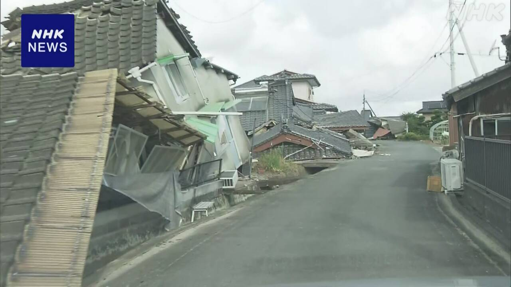
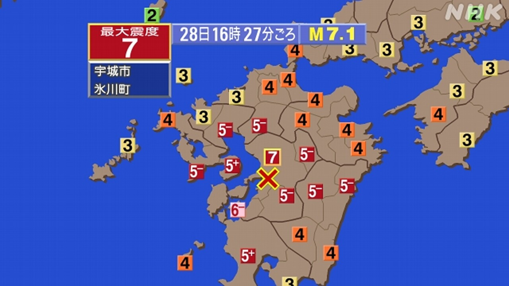
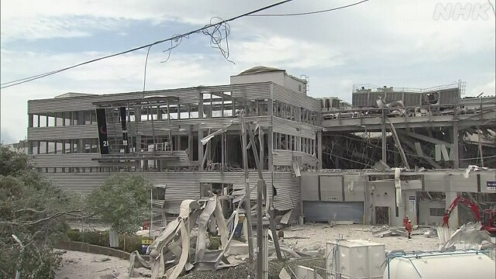

最新ニュース
1️⃣ 熊本の地震 9000人以上が避難 水道や電気も止まっている

28日、熊本県で起こった大きい地震のニュースです。
地震で亡くなった人やけがをした人がたくさんいます。
熊本県によると、家が壊れたりして、9000人以上が避難しています。
電気が止まっている家や建物が、1万4000ぐらいあります。
水道が止まっている所は、8万ぐらいあります。
震度6強だった八代市では、1万8000ぐらいの所で、水道が止まっています。
このため、「給水車」という車で、みんなに水をあげています。
市によると、しばらく水道が止まったままになりそうです。
2️⃣ 熊本の地震「ベトナム人の技能実習生が亡くなった」
この地震で、熊本県に住む外国人にも被害が出ています。
ベトナムの外務省は、ベトナム人の技能実習生1人が亡くなったと言いました。技能実習生は、働きながら技術を習う人です。
ベトナムのメディアによると、この人は今年1月から熊本県の工場で働いていました。クレーンが落ちてきて、亡くなったようです。
このほか、熊本県宇城市でベトナム人の女性がけがをしました。
そして、熊本県に住むたくさんのベトナム人から、家が壊れたという連絡があったと、伝えています。
ベトナムの外務省は、助けてほしい人は日本にある大使館などに連絡してくださいと言っています。
3️⃣ 熊本の地震 1週間ぐらいは大きい地震に気をつけて

28日の夕方、熊本県で大きい地震がありました。
いちばん強く揺れたところは、震度7でした。
熊本県では建物が倒れるなど大きい被害が出ています。
この地震のあとも、強い地震が続いています。
気象庁は「1週間ぐらいは、同じぐらい大きい地震がまたくるかもしれません。これから3日ぐらいは特に気をつけてください」と言っています。そして「海で大きい地震が起こった場合は、津波に気をつけてください」と言っています。
4️⃣ 熊本の地震 とても大きい被害が出ている

熊本県によると、この地震で12人が亡くなるなど、とても大きい被害が出ています。
嘉島町のショッピングセンターでは、大きい爆発が起こって建物が壊れました。3人が亡くなりました。
八代市にある工場では、煙突が折れて建物が壊れました。5人が亡くなりました。
熊本県では9000人ぐらいの人が避難しています。
今も、電気や水道が止まっているところがあります。鉄道や道路などの交通にも大きい影響が出ています。
- 〜によると
- 〜以上
- 〜ている / 〜でいる
- 〜くらい / 〜ぐらい
- 〜ところ
- 〜ため
- 〜という
- 〜そうだ
- 〜になる
- 〜ながら
- 〜から
- 〜ようだ / 〜みたいだ
- 〜がある / 〜がいる
- 〜てください / 〜でください
- 〜など
- 〜後 / 〜あと
- 〜かもしれない / 〜かもしれません
- 〜ても / 〜でも
- 〜や〜など
vebaev.github.io
Generated: 2026-07-30 11:52:28 UTC